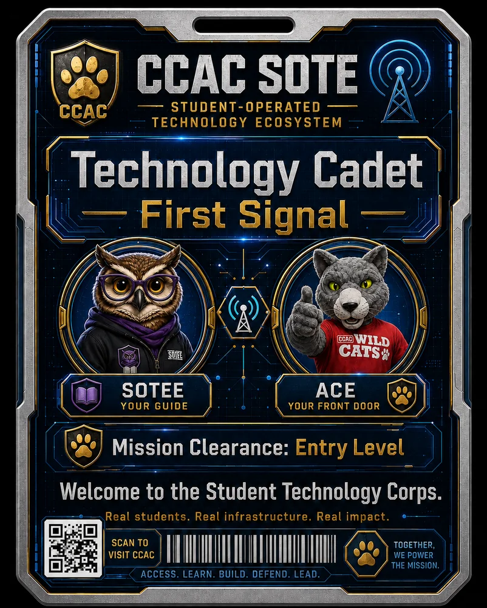

Printable visitor asset
Technology Cadet: First Signal Badge Sheet
Use this as a temporary print sheet for demos, open houses, and student ambassador walkthroughs using the recovered approved Technology Cadet mission-pass artwork.
Review before public use. Do not imply official certification, grades, or student records.